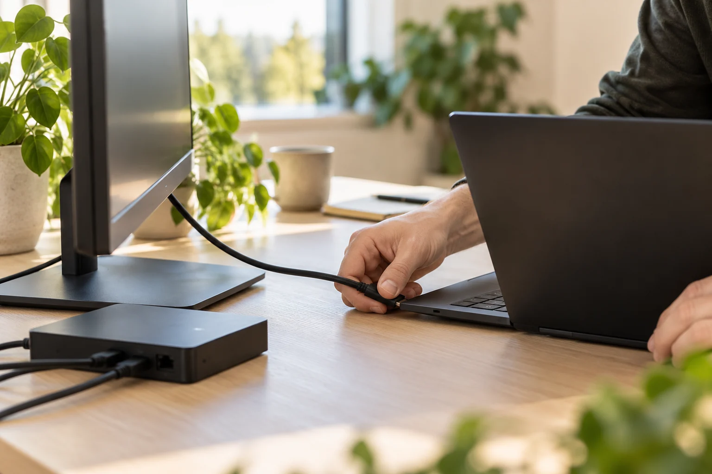

DIN LOKALE IT-PARTNER
IT som funker.
Folk som
bryr seg.
Vi tar hånd om IT-en, så dere kan ta hånd om bedriften. Drift, support og utstyr — med et lag som kjenner dere.
Vi får verktøyene deres
til å spille på lag.
DETTE HJELPER VI MED
Hele IT-hverdagen.
Ett lag å ringe.
Fra en PC som ikke vil, til et kontor som skal opp og stå. Vi finner løsningen, forklarer den og følger opp.
TEKNOLOGI ER BRA. FOLK ER BEDRE.
Store nok til å hjelpe.
Små nok til å kjenne deg.

Ordentlige løsninger.
Vi er tre IT-folk med base i Asker og sans for ting som fungerer.
Vi liker å finne ut av problemet, rydde opp og gjøre hverdagen litt enklere. Hos oss møter dere folk som kan teknologien og tar seg tid til å forstå bedriften.
Vi kjenner oppsettet deres
God dokumentasjon og en fast kontakt gjør at vi kan bygge videre fra gang til gang.
Vi snakker så folk forstår
Klare råd, tydelige avtaler og forklaringer dere faktisk kan bruke.
Vi kommer når det trengs
Mye kan løses på avstand. Når jobben krever oppmøte, avtaler vi et besøk.
EN AVTALE SOM PASSER DERE
Fast oppfølging.
Full oversikt.
En IT-avtale gir dere et lag som følger opp, og en tydelig pris på hjelpen dere trenger underveis.
- Fast kontakt og prioritert håndtering
- Oversikt over avtalt utstyr og systemer
- Planlagt vedlikehold og oppfølging
- Rabattert timepris på support
Et helt lag i ryggen.
Hvor mange PC-brukere er dere?
Veiledende konseptpriser. Minstepris 3 990 kr/mnd. Én PC per bruker. Inntil én time planlagt oppfølging per måned. Brukerstøtte, lisenser, verktøy, utstyr, reise og etablering kommer i tillegg. Endelig innhold og pris avtales etter kartlegging.
NÆRHET GJØR EN FORSKJELL
Kort vei.
Lav terskel.
Vi har base i Asker og hjelper bedrifter i Oslo, Drammen og Buskerud. Et lite spørsmål på telefon eller en større jobb på kontoret — vi finner en god vei videre.
Oppmøte etter avtale, innenfor omtrent to timers kjøring fra Asker sentrum.
GREIT Å VITE
Lurer dere
på noe?
Her er noen av spørsmålene vi gjerne tar en prat om.
Hjelper dere både små og større bedrifter?
Vi retter oss særlig mot mindre bedrifter uten egen IT-avdeling. Vi kartlegger antall brukere, systemer og behov før vi foreslår en avtale. Har dere en IT-ansvarlig fra før, kan vi også bistå med konkrete oppgaver.
Må vi ha en fast IT-avtale?
Nei. Dere kan få hjelp til enkeltoppdrag, innkjøp eller oppsett. En fast avtale passer når dere ønsker løpende oppfølging og en fast kontakt. Vi avklarer omfang og pris før vi begynner.
Støtter dere Windows, Mac og Linux?
Ja, vi hjelper med alle tre. Vi tilpasser oppsett og støtte til maskinene, programmene og arbeidsoppgavene deres. Spesialsystemer og servermiljøer kartlegges før vi avtaler driftsansvar.
Kan dere komme til kontoret vårt?
Ja. Vi har base i Asker og avtaler oppmøte hos bedrifter innenfor omtrent to timers kjøring. Mye kan også løses med fjernhjelp. Tidspunkt, reisetid og eventuelle reisekostnader avklares på forhånd.
Kan dere ta over fra dagens IT-leverandør?
Vi kan hjelpe med en planlagt overgang. Først går vi gjennom avtaler, tilganger, utstyr og dokumentasjon sammen med dere. Deretter lager vi en plan og avklarer hva som må gjøres før overtakelsen.
DET STARTER MED EN PRAT
Skal vi få
IT-en deres
på stell?
Fortell litt om bedriften og hva dere trenger hjelp med. Så finner vi ut hvordan Driftslaget kan passe inn.